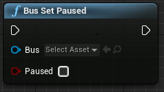
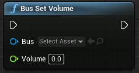
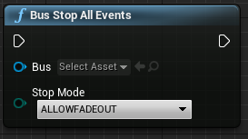

Unreal Integration 2.02
7. Blueprint Reference | Bus
Used for controlling mixer buses.
Methods:
- Bus Set Mute Mute/Unmute the bus.
- Bus Set Paused Pause/Unpause all events going through the bus.
- Bus Set Volume Set volume on a bus.
- Bus Stop All Events Stop all EventInstances routed into the bus.
Bus Set Mute
Mute/Unmute the bus.

C++
static void BusSetMute(
class UFMODBus *Bus,
bool bMute
);
- Bus
- UFMODBus to use.
- bMute
- Mute value.
Bus Set Paused
Pause/Unpause all events going through the bus.

C++
static void BusSetPaused(
class UFMODBus *Bus,
bool bPaused
);
- Bus
- UFMODBus to use.
- bPaused
- Pause value.
Bus Set Volume
Set volume on a bus.

C++
static void BusSetVolume(
class UFMODBus *Bus,
float Volume
);
- Bus
- UFMODBus to use.
- Volume
-
Volume value.
- Units: Linear
- Range: [0, 1]
Bus Stop All Events
Stop all EventInstances routed into the bus.

C++
static void BusStopAllEvents(
class UFMODBus *Bus,
EFMOD_STUDIO_STOP_MODE stopMode
);
- Bus
- UFMODBus to use.
- stopMode
- Desired stop mode.
See Also: FMOD_STUDIO_STOP_MODE